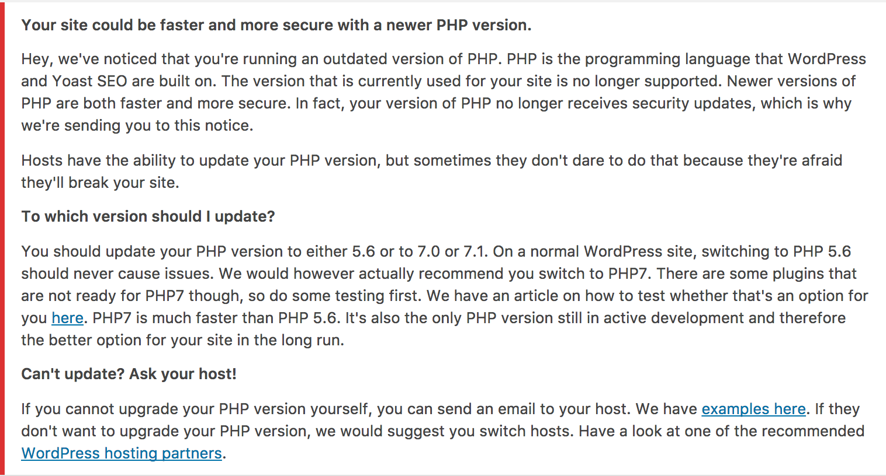

A WordPress package to nudge users to upgrade their software versions (starting with PHP)

The following versions of PHP are supported:
WordPress is also required for certain functionality:
WPMessagePresenter requires WordPress or a function called add_action, to hook into WordPress.PHPVersionDetector requires WordPress or a function called __, to translate strings.$ composer require yoast/whip
The easiest way to use Whip in WordPress is just by using the included function to check the versions. In this case checking if PHP 5.6 or greater is installed:
whip_wp_check_versions( array(
'php' => '>=5.6',
) );
This will show a message to all users of your plugin on PHP5.2 to PHP 5.5. By default the message will be shown on every page of the admin and to every user. It is up to the implementing plugin to restrict this to certain users and/or pages.
It is possible to add a custom message to the PHP version message by setting specific environment variables:
putenv( "WHIP_NAME_OF_HOST=Name of the host" );
putenv( "WHIP_MESSAGE_FROM_HOST_ABOUT_PHP=A message from the host" );
The WHIP_NAME_OF_HOST environment variable could be reused in the future for showing messages about different software packages.
Both the name and the message for PHP can also be changed using WordPress filters:
function my_host__name_for_whip() {
return 'Name of the host';
}
add_filter( 'whip_name_of_host', 'my_host__name_for_whip' );
function my_host__php_message_for_whip( $message ) {
return 'A message from the host';
}
add_filter( 'whip_message_from_host_about_php', 'my_host__php_message_for_whip' );
The WordPress filters can also read the value previously set by the environment variables.
As a general rule, the filter is the same as the environment variable, but lowercased.
We have created a hosting overview page on yoast.com which only contains hosts that we've vetted. The PHP message links to this page by default. If you really prefer to link to the WordPress.org hosting page that is possible. Just use the whip_hosting_page_url_wordpress filter:
add_filter( 'whip_hosting_page_url_wordpress', '__return_true' );
We follow semantic versioning with an extra strict rule for MAJOR versions. We will do a major version bump whenever we add new methods. We have to do this because of the shared namespace in PHP. When this package will be used in multiple plugins we cannot safely add and use a method without bumping a major version. This is because the version without the new method may be autoloaded and then a fatal error occurs.
This also means that any major version bump is accompanied by a change of all class names in the package. So for version 2 of this package all classes will be postfixed with _v2. This prevents fatal errors when two plugins include different versions of this package.
If you discover any security related issues, please email security@yoast.com instead of using the issue tracker.